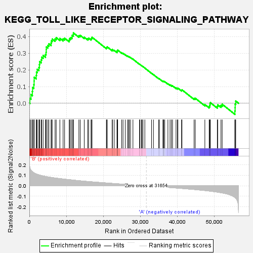
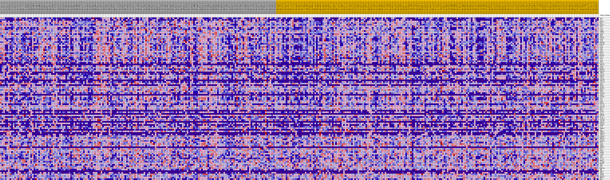
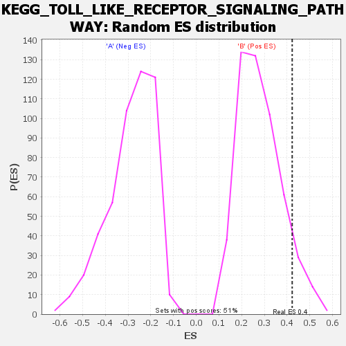

| | | Dataset | my.my.cls#B_versus_A.my.cls#B_versus_A_repos |
| Phenotype | my.cls#B_versus_A_repos |
| Upregulated in class | B |
| GeneSet | KEGG_TOLL_LIKE_RECEPTOR_SIGNALING_PATHWAY |
| Enrichment Score (ES) | 0.4221746 |
| Normalized Enrichment Score (NES) | 1.506497 |
| Nominal p-value | 0.076171875 |
| FDR q-value | 0.8637632 |
| FWER p-Value | 0.756 |
Table: GSEA Results Summary

Fig 1: Enrichment plot: KEGG_TOLL_LIKE_RECEPTOR_SIGNALING_PATHWAY
Profile of the Running ES Score & Positions of GeneSet Members on the Rank Ordered List
| SYMBOL | TITLE | RANK IN GENE LIST | RANK METRIC SCORE | RUNNING ES | CORE ENRICHMENT | | 1 | SPP1 | na | 146 | 0.173 | 0.0295 | Yes |
| 2 | IL6 | na | 434 | 0.148 | 0.0520 | Yes |
| 3 | MAPK11 | na | 814 | 0.135 | 0.0704 | Yes |
| 4 | AKT2 | na | 864 | 0.133 | 0.0943 | Yes |
| 5 | MAPK12 | na | 1202 | 0.125 | 0.1116 | Yes |
| 6 | TAB1 | na | 1288 | 0.124 | 0.1330 | Yes |
| 7 | CCL3 | na | 1300 | 0.123 | 0.1557 | Yes |
| 8 | CTSK | na | 1849 | 0.114 | 0.1671 | Yes |
| 9 | IKBKG | na | 1935 | 0.112 | 0.1865 | Yes |
| 10 | TIRAP | na | 2125 | 0.110 | 0.2035 | Yes |
| 11 | CD40 | na | 2579 | 0.105 | 0.2150 | Yes |
| 12 | TBK1 | na | 2725 | 0.103 | 0.2316 | Yes |
| 13 | PIK3R1 | na | 2777 | 0.103 | 0.2497 | Yes |
| 14 | TLR8 | na | 3198 | 0.099 | 0.2607 | Yes |
| 15 | TLR4 | na | 3337 | 0.098 | 0.2764 | Yes |
| 16 | MAP3K8 | na | 3732 | 0.094 | 0.2869 | Yes |
| 17 | MAP2K6 | na | 4362 | 0.090 | 0.2925 | Yes |
| 18 | LY96 | na | 4526 | 0.089 | 0.3061 | Yes |
| 19 | CD80 | na | 4570 | 0.088 | 0.3218 | Yes |
| 20 | CD86 | na | 4588 | 0.088 | 0.3379 | Yes |
| 21 | TLR2 | na | 5005 | 0.086 | 0.3464 | Yes |
| 22 | MAPK1 | na | 5290 | 0.084 | 0.3570 | Yes |
| 23 | CD14 | na | 5885 | 0.080 | 0.3614 | Yes |
| 24 | MAP3K7 | na | 5970 | 0.080 | 0.3748 | Yes |
| 25 | STAT1 | na | 6195 | 0.079 | 0.3855 | Yes |
| 26 | AKT3 | na | 6968 | 0.075 | 0.3857 | Yes |
| 27 | CCL4 | na | 7276 | 0.074 | 0.3939 | Yes |
| 28 | IRF5 | na | 8262 | 0.069 | 0.3894 | Yes |
| 29 | CXCL9 | na | 9140 | 0.065 | 0.3860 | Yes |
| 30 | IFNA14 | na | 9544 | 0.064 | 0.3907 | Yes |
| 31 | TLR9 | na | 10797 | 0.059 | 0.3795 | Yes |
| 32 | MAPK8 | na | 10898 | 0.058 | 0.3885 | Yes |
| 33 | MAPK10 | na | 11212 | 0.057 | 0.3936 | Yes |
| 34 | MAPK14 | na | 11555 | 0.056 | 0.3980 | Yes |
| 35 | IFNA8 | na | 11585 | 0.056 | 0.4078 | Yes |
| 36 | CXCL8 | na | 11913 | 0.055 | 0.4122 | Yes |
| 37 | IFNAR2 | na | 11924 | 0.055 | 0.4222 | Yes |
| 38 | TLR5 | na | 13405 | 0.049 | 0.4051 | No |
| 39 | PIK3R5 | na | 13767 | 0.048 | 0.4077 | No |
| 40 | IFNA16 | na | 14861 | 0.044 | 0.3966 | No |
| 41 | CXCL10 | na | 15812 | 0.041 | 0.3875 | No |
| 42 | IRF3 | na | 16059 | 0.041 | 0.3907 | No |
| 43 | IFNA5 | na | 16693 | 0.039 | 0.3867 | No |
| 44 | IRAK4 | na | 16857 | 0.038 | 0.3909 | No |
| 45 | MAP2K1 | na | 16959 | 0.038 | 0.3962 | No |
| 46 | CHUK | na | 20857 | 0.027 | 0.3323 | No |
| 47 | IRAK1 | na | 20973 | 0.027 | 0.3353 | No |
| 48 | PIK3CG | na | 21068 | 0.027 | 0.3386 | No |
| 49 | IFNA2 | na | 22431 | 0.023 | 0.3188 | No |
| 50 | PIK3R3 | na | 22479 | 0.023 | 0.3222 | No |
| 51 | TLR1 | na | 22963 | 0.022 | 0.3177 | No |
| 52 | TLR7 | na | 23733 | 0.020 | 0.3077 | No |
| 53 | FADD | na | 23762 | 0.020 | 0.3109 | No |
| 54 | MYD88 | na | 23815 | 0.019 | 0.3136 | No |
| 55 | CXCL11 | na | 23848 | 0.019 | 0.3166 | No |
| 56 | TOLLIP | na | 23910 | 0.019 | 0.3191 | No |
| 57 | MAP2K7 | na | 24994 | 0.016 | 0.3030 | No |
| 58 | RELA | na | 25360 | 0.016 | 0.2995 | No |
| 59 | IFNA6 | na | 25972 | 0.014 | 0.2913 | No |
| 60 | IL12A | na | 26577 | 0.012 | 0.2829 | No |
| 61 | IFNA4 | na | 26855 | 0.012 | 0.2802 | No |
| 62 | MAP2K2 | na | 27050 | 0.011 | 0.2788 | No |
| 63 | IL1B | na | 27408 | 0.010 | 0.2744 | No |
| 64 | PIK3CB | na | 28048 | 0.009 | 0.2647 | No |
| 65 | TICAM2 | na | 29828 | 0.004 | 0.2341 | No |
| 66 | IFNA17 | na | 29922 | 0.004 | 0.2332 | No |
| 67 | PIK3CD | na | 30315 | 0.003 | 0.2269 | No |
| 68 | IFNB1 | na | 30493 | 0.003 | 0.2243 | No |
| 69 | CCL5 | na | 30756 | 0.002 | 0.2200 | No |
| 70 | IFNAR1 | na | 31266 | 0.001 | 0.2112 | No |
| 71 | LBP | na | 33077 | -0.003 | 0.1798 | No |
| 72 | IKBKE | na | 33599 | -0.005 | 0.1715 | No |
| 73 | IFNA13 | na | 34989 | -0.008 | 0.1484 | No |
| 74 | IFNA21 | na | 35223 | -0.009 | 0.1460 | No |
| 75 | PIK3R2 | na | 36180 | -0.011 | 0.1311 | No |
| 76 | NFKBIA | na | 36221 | -0.011 | 0.1326 | No |
| 77 | PIK3CA | na | 36393 | -0.012 | 0.1317 | No |
| 78 | MAPK13 | na | 36654 | -0.012 | 0.1294 | No |
| 79 | TLR6 | na | 37512 | -0.015 | 0.1170 | No |
| 80 | TAB2 | na | 38084 | -0.016 | 0.1099 | No |
| 81 | IKBKB | na | 38457 | -0.017 | 0.1065 | No |
| 82 | IFNA10 | na | 38765 | -0.018 | 0.1044 | No |
| 83 | RAC1 | na | 39710 | -0.021 | 0.0916 | No |
| 84 | RIPK1 | na | 40094 | -0.022 | 0.0888 | No |
| 85 | TRAF6 | na | 40214 | -0.022 | 0.0907 | No |
| 86 | CASP8 | na | 41202 | -0.025 | 0.0779 | No |
| 87 | TLR3 | na | 41321 | -0.025 | 0.0804 | No |
| 88 | IRF7 | na | 44597 | -0.035 | 0.0289 | No |
| 89 | IL12B | na | 44916 | -0.036 | 0.0299 | No |
| 90 | MAPK3 | na | 47515 | -0.045 | -0.0077 | No |
| 91 | TICAM1 | na | 48680 | -0.050 | -0.0191 | No |
| 92 | MAPK9 | na | 48865 | -0.050 | -0.0130 | No |
| 93 | JUN | na | 48909 | -0.051 | -0.0043 | No |
| 94 | AKT1 | na | 48994 | -0.051 | 0.0036 | No |
| 95 | MAP2K4 | na | 50882 | -0.060 | -0.0186 | No |
| 96 | TNF | na | 50996 | -0.060 | -0.0094 | No |
| 97 | IFNA7 | na | 51876 | -0.065 | -0.0128 | No |
| 98 | IFNA1 | na | 52207 | -0.068 | -0.0061 | No |
| 99 | TRAF3 | na | 55638 | -0.111 | -0.0462 | No |
| 100 | MAP2K3 | na | 55705 | -0.112 | -0.0265 | No |
| 101 | NFKB1 | na | 55714 | -0.113 | -0.0057 | No |
| 102 | FOS | na | 55867 | -0.117 | 0.0133 | No |
Table: GSEA details [plain text format]

Fig 2: KEGG_TOLL_LIKE_RECEPTOR_SIGNALING_PATHWAY
Blue-Pink O' Gram in the Space of the Analyzed GeneSet

Fig 3: KEGG_TOLL_LIKE_RECEPTOR_SIGNALING_PATHWAY: Random ES distribution
Gene set null distribution of ES for KEGG_TOLL_LIKE_RECEPTOR_SIGNALING_PATHWAY